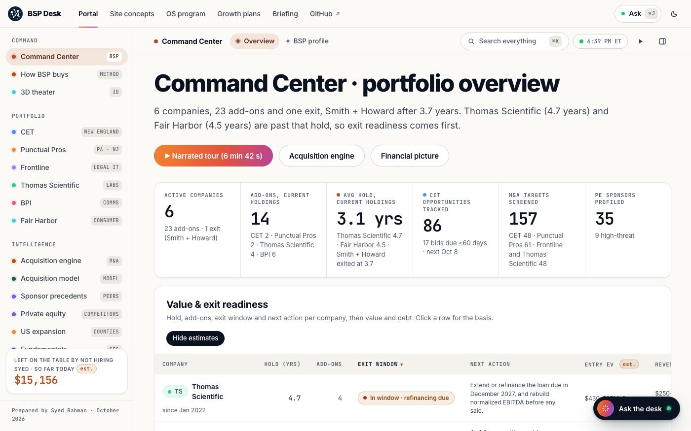
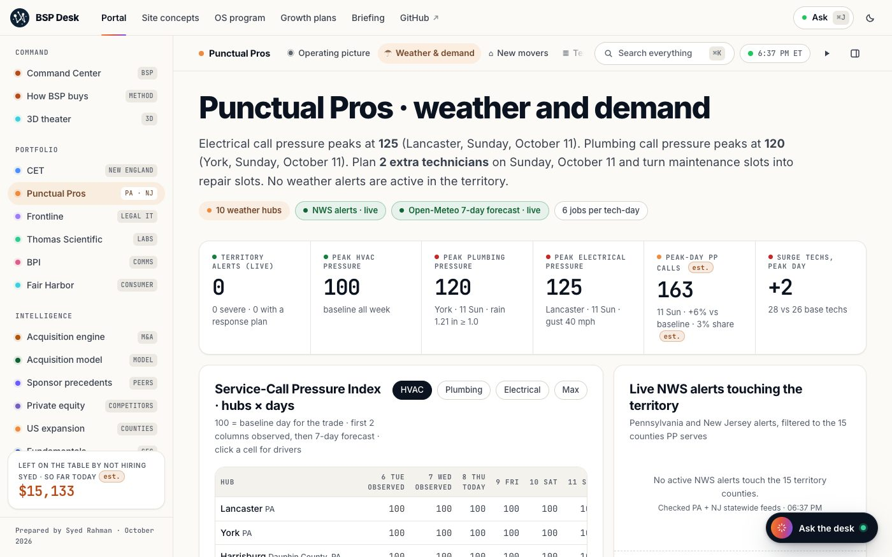
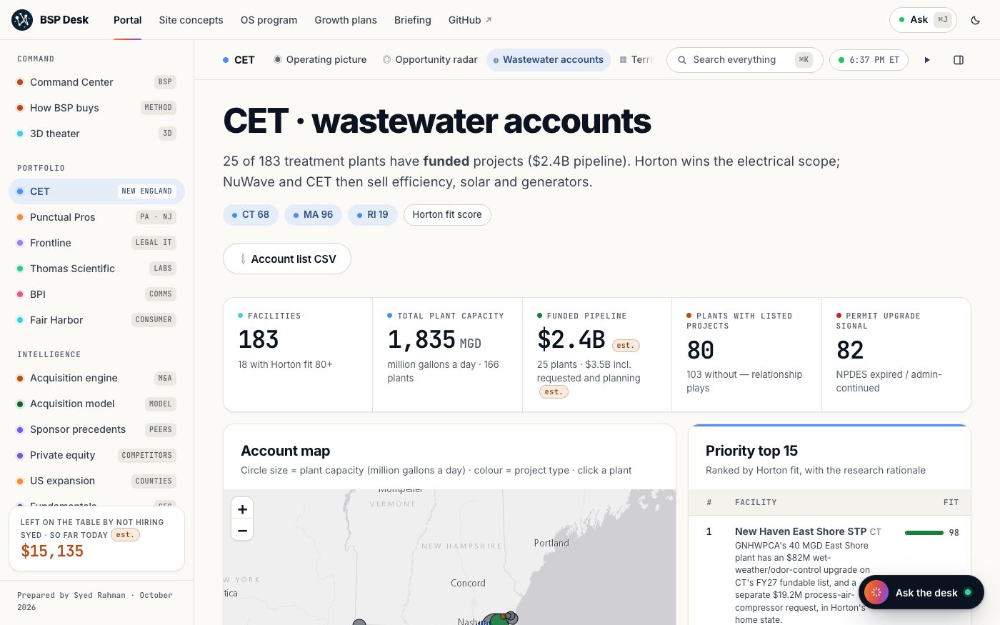
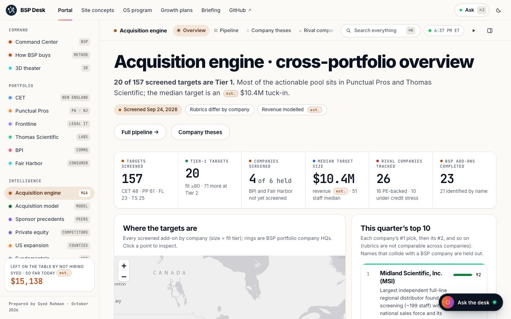

“What do this week's storms mean for Punctual Pros?”
Live National Weather Service alerts, a 7-day forecast and the demand model
Ask about any of the six companies.
Prepared by Syed Rahman for the Portfolio Resource Group at Broad Sky Partners (BSP). Every number has a source; estimates are marked est.
Start here
Ask one question, read one plan, then watch the film. Your progress is saved in this browser.
“Show me how to take Punctual Pros nationwide.” The answer shows the data behind each number.
Four phases from Lancaster to a national footprint: small acquisitions, AI agents, technician training and the returns.
A two-minute tour of the portal, the concept sites and the 3D theater.
What it answers
Each answer links to the portal view behind it.
“What do this week's storms mean for Punctual Pros?”
Live National Weather Service alerts, a 7-day forecast and the demand model
“Estimate Punctual Pros revenue from public filings”
SEC, loan and franchise filings, combined into estimates that are clearly marked
“How many new-mover leads are in Lancaster County?”
County deed records, a score for each lead and a list ready to mail
“Show the top add-on targets for CET in Connecticut”
48 screened CET targets with a fit score and sources
“Which wastewater plants should Horton call first?”
183 plants in CT, MA and RI, with funded projects and a fit score
“Who competes with BSP for home-services deals?”
35 rival sponsors, with their funds and their 2025–26 deals
“What can we pay for a tuck-in and still earn 20% a year?”
A live buyout, DCF and roll-up model, prefilled from filings and the add-on screens. It downloads as an Excel workbook with working formulas.
The evidence base
Source: public filings, bid boards, county deed records and press, counted when this page loads.
Product tour
Each view opens with the answer, then shows the evidence and the next step.




What does the portfolio look like this week?
6 companies, 23 add-ons and one realized exit. 86 CET opportunities, 157 add-on targets and live weather alerts for PA, NJ, MA and CT on one map.
Sample answer · October 2026
The portfolio
Each one has a portal module for weekly decisions and a concept website.
Residential HVAC, plumbing and electrical from East Hempfield (Lancaster), PA.
Electrical and energy infrastructure across New England, from Worcester and Taunton, MA.
Managed IT, help desk, cybersecurity and billing services for law firms, from St. Louis.
Lab supply distribution since 1900, from Swedesboro, NJ.
Strategic communications, public affairs and digital, founded by Andrew Bleeker.
Sustainable beachwear made from recycled plastic bottles, from New York.
Smith + Howard, BSP's first exit (to TPG, August 2026), is not tracked here.
The OS program
Bankers value project-based service companies at 5–6x EBITDA and tech-enabled ones at 10x or more. Each company gets its own software system, aimed at the numbers buyers pay for.
Weather-driven dispatch, AI call answering, memberships and new-mover automation.
Estimating, crew scheduling, solar fleet monitoring and wastewater service contracts.
An AI service desk, a security score for each firm, and eBilling with receivables automation.
Ordering from inside customers' purchasing systems, managed inventory, AI search and account-health scores.
Narrative monitoring and message testing, sold as subscriptions that smooth the election cycle.
AI fit and size, replenishment reminders, a wholesale portal and inventory forecasting for a seasonal line.
Source: OS program estimates: vendor case studies, PKF, Capstone/IMAP, October 2026. Analyst assumptions, not guidance.
Open the tech-enablement moduleGrowth plans and programs
One growth plan per company, the programs that span the portfolio, and the memo.
The briefing
A narrated walk through every module: demand, bids, targets and next steps. Or watch the two-minute film.
Video briefing · 5 min 3 s · 52 chapters · 1080p
Answers come from the portal's own data.